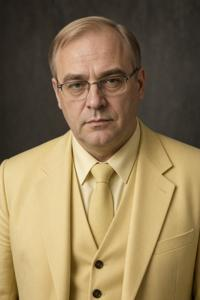

Vaclav Bluxa


Vaclav Serafimov Bluxa (Zgurian and Deglian: Vaclav Serafimov Bluxa, Glagolitic: ⰂⰀⰜⰎⰀⰂ ⰔⰅⰓⰀⰗⰊⰏⰑⰂ ⰁⰎⰖⰢⰀ; 1947–2020) was an Upper Pannonian economist and politician, the son of Serafim Bluxa. Under socialism he earned a reputation as a highly qualified economist with reformist views. After the fall of the communist regime he was appointed prime minister and carried out radical market reforms that, rather than restoring the economy to health, pushed it into final collapse.
Family and early years
Vaclav was born in Vronovica, the youngest of three sons of two well-known parents. His father, Serafim Bluxa, was a historian at the New University, the official son of the first Pannonian prime minister Zdjeslav Bluxa and the leading authority on his biography. His mother, Milica Xrogoljceva, was one of the first Pannonian women to qualify as an engineer and helped design the Gowbkaslava hydroelectric plant. The parents were not part of the communist nomenclature, but they had wide connections, privileges and a famous name, all of which served Vaclav well. He was exempted from compulsory military service “on grounds of mental health”; the medical board was chaired by his second cousin. The diagnosis did not stop him from entering the prestigious Institute of Socialist Economy, from which he graduated with distinction in 1970. In 1974, immediately after he defended his dissertation, The Apologetic Essence of the “Natural Rate of Unemployment” Concept in M. Friedman's Monetarism, Bluxa was offered the post of research director at the institute's Center for the Study of Contemporary Capitalism (CSCC).
Academic career
The CSCC was among the most privileged research institutions in the country. Its staff regularly traveled to conferences and internships in capitalist countries, and its library subscribed to banned foreign literature. It was common knowledge that the center had been founded by the Economic Intelligence Directorate (EID) of the Ministry of People's Security (Naprava ob oxrone naroda, NON), which still oversaw it, and that trips abroad were often cover for espionage. Alongside the NON agents, however, the CSCC also employed genuine, highly qualified scholars, and Vaclav Bluxa was one of them.
It is no surprise that CSCC specialists were the first to notice the warning signs of deepening structural problems in the Pannonian planned economy, one of the most rigid in Eastern Europe. In classified analytical memos for the EID, Bluxa warned of an approaching crisis and argued for moderate market reforms along Hungarian and Yugoslav lines. The memos were passed up the chain, but Supreme Leader Gowbka would hear nothing of revising the foundations of central planning.
In print, the CSCC published an annual collection, Critique of Contemporary Bourgeois Economic Thought, to which Bluxa contributed the key articles. He did less criticizing than retelling: he summarized banned Western authors in detail and quoted them at length, making their ideas available to Pannonian readers past the censors. Party hardliners noticed and grew wary. In early 1976 Emilj Vcziski, head of the Central Committee's ideology department, rebuked the CSCC for an “insufficiently critical approach” in the main party newspaper, Zarja slobody (“Dawn of Freedom”). The institute convened a party meeting at which Bluxa had to repent humbly and promise to “correct his shortcomings.”
By way of correcting them, at the end of 1976 he published a monograph, The Crisis of Capitalism, which put forward a bold forecast:
The unrestrained growth of capitalist industry is saturating the planet's atmosphere with greenhouse gases. In the relatively near future (the 21st–22nd centuries) this will inevitably lead to climate warming, the melting of the polar ice caps, a rise in sea level, and the flooding of the principal concentrations of finance capital and hubs of world trade, such as London, New York, Rotterdam, Tokyo, Singapore and Hong Kong. It is no accident but a law of development that all these centers lie on the sea: in the formative period of modern capitalism, maritime trade with its low transport costs multiplied the turnover of capital and drew it precisely to coastal zones. The two tendencies — accelerated development spurred by a coastal location, and the accumulation of greenhouse gases that dooms those same coastal areas to flooding — are dialectically linked: capitalism sows the seeds of its own destruction. Meanwhile, continental regions cut off from sea routes lagged behind, which made countries such as tsarist Russia and imperial China the weak links of the capitalist system and created the conditions for proletarian revolutions there. Once the rising ocean has destroyed the modern capitalist world, the continental socialist countries will, in accordance with historical law, take the commanding heights of the world economy — the reverse side of the same dialectical spiral.
The scenario provoked considerable academic debate and even reached popular culture: the writer Ljubodar Vloszek, a close acquaintance of Bluxa's, based his science fiction novel Vronovica in 2027 on it. Party critics passed over the book in silence, apparently unsure how to react: its author dutifully foretold the collapse of capitalism and the triumph of socialism, but by some strange route that neither Marx nor Gowbka had foreseen.
Personal life
The young Vaclav Bluxa was handsome, bore a famous name, held a prestigious post and often traveled abroad on business, returning with fashionable clothes and records by popular Western artists. Women, unsurprisingly, took notice. In 1966, while still a student, he married his classmate Rozalia Ratkova. For years the couple had no children. Rozalia gave birth to a son, Djordji, in 1973, and a year later, shortly after defending his dissertation, Vaclav divorced her. In private he admitted openly that his wife had lost her appeal for him once the child was born. He paid child support but took no interest in the fate of his son or his former wife.
The same year, shortly before his appointment as research director of the CSCC, he married Ursula Raczeva, daughter of the late classic of Pannonian socialist literature. Their affair had begun long before, soon after Raczeva's divorce from her first husband, the aforementioned Ljubodar Vloszek. The lavish wedding drew the cream of Vronovica society. The marriage did not last: neither spouse was known for fidelity, and they separated by mutual consent in 1975.
The following year Bluxa married for the third time. His new wife, Dyana Dobrivojeva, was another former classmate and a researcher at the CSCC. The match surprised many: Dobrivojeva came from a humble family and was plain-looking. She was, however, a capable economist who co-authored many works with her husband, and malicious gossip held that she was the real author of The Crisis of Capitalism and of whatever else Bluxa wrote that went beyond paraphrasing Western authors. Vaclav himself acknowledged her as his source of inspiration. The marriage proved durable, survived the birth of their daughter Ljuba in 1978, and ended only with Dyana's death in 1990 (see below).
Political career
By the 1980s Vaclav Bluxa was firmly established as the republic's leading economist. Besides his classified reports, each year more alarming, and his academic publications, he gave interviews and wrote newspaper articles for a general audience. After 1985 he began cautiously making the case for market reform not only in his reports but in public as well, pointing to the Chinese example. As the situation in the country worsened and everyone could see the system had reached a dead end, Bluxa seemed the one man who knew how to fix it.
In print Bluxa was careful, calling only for modest relaxations that left the essence of socialism intact; the censors would have allowed nothing more. In private conversation, however, and even in seminars for a small circle of graduate students, he did not hesitate to air his real views, which were radically pro-market and verged on anarcho-capitalism. He advocated privatizing everything, including education, health care, public transport, roads, rivers, local government, the courts, law enforcement and the army. Oddly, this coexisted with his Marxism and his faith in his own forecast: “Capitalism will certainly perish, but not before it reaches its extreme and exhausts its full potential. We must help it along — not hold it back or lead it astray, but push it forward, toward the abyss.” The general public knew nothing of this esoteric doctrine.
By 1989 virtually everyone except Severin Gowbka accepted that the planned economy needed deep reform. Only Gowbka's death on 10 November 1989 made real change possible. Someone had to lead the transition to a market economy. No one knew exactly what to do, but everyone assumed that if anyone did, it was Vaclav Bluxa. On 24 December 1989, at its last session of the year, the Legislative Assembly voted by an overwhelming majority to appoint a “non-party technical cabinet of reforms” headed by Bluxa. The grandson of the first prime minister of independent Upper Pannonia became the first prime minister of post-communist Upper Pannonia. Amid universal applause and hopes that every problem would soon be solved, the era of reform began. It proved short and catastrophic.
Head of government
Bluxa's cabinet was billed as non-party, but most of its ministers had been non-party for only a few weeks: they were former economic managers who had left the CPUP shortly before their appointment. Bluxa gave the key economic posts to his former graduate students from the CSCC, theorists in their thirties with no administrative experience. He himself had never run anything larger than a research center.
The program he presented to the Legislative Assembly in January 1990 came straight out of the monetarist textbook: price liberalization, an end to subsidies, budget cuts, tight monetary policy and privatization. Most prices were freed on 1 February 1990. They rose sixfold on average in the first month and roughly eightyfold by the end of the year. Household savings were wiped out.
The textbook did not account for what was missing from the official statistics. Behind the façade of central planning, a shadow economy had long since taken shape: enterprises settled accounts with each other in barter, and workers were often paid in kind. This sector was immune to monetary policy and paid no taxes. Tightening the money supply hit only the budget and the wages of public employees. Under pressure from strikes, the central bank printed money to pay wages and pensions, and by summer tight monetary policy had turned into its opposite.
The privatization law passed in March 1990 provided for selling state enterprises at open auctions. But the enterprises' directors had long been their de facto owners, and they had no intention of giving up control. They kept outside bidders away from the auctions, sometimes by openly criminal means, moved assets into front companies in advance, and bought the plants for nominal sums through proxies. Bluxa considered this an acceptable cost: “It doesn't matter who becomes the owner or how. What matters is that there is an owner; the market will take care of the rest.”
Military orders accounted for about a third of industrial output, and demilitarization cut them several times over. A program to convert defense plants to civilian production was announced but never funded. Entire towns were left without work.
In the summer of 1990 the government received stabilization loans from the International Monetary Fund and the World Bank. The money was channeled through ministries and new commercial banks, and most of it vanished without a trace. No one accused Bluxa himself of corruption, but he was powerless to control his own government apparatus.
Within a few months in office Bluxa had become the most hated man in the country, and his public remarks fed the hatred. He advised pensioners complaining of poverty to “learn to trade.” He called racketeering “the market price of security services the state is not yet able to provide,” and factory closures “the release of labor.” Asked about the street markets that had taken over Vronovica, he replied: “That is the market. There is no other kind.”
On 1 August 1990 Bluxa's car was raked with automatic fire on a country highway. Bluxa was lightly wounded; his wife Dyana was killed. The gunman was Filyp Holjski, a former NOR captain who had been discharged in the cutbacks and had failed to find civilian work. Investigators concluded that he had acted alone, though many doubted it. At his trial the whole courtroom applauded Holjski as a hero; he was released fifteen years later, a respected man.
Bluxa did not stand in the October 1990 elections. In November the new Legislative Assembly passed a vote of no confidence in his cabinet by an overwhelming majority — almost the only decision on which Zgurian and Deglian deputies ever agreed. They could not agree on a new government, however, and Bluxa stayed on as acting prime minister for another six months. By then reform had ground to a halt, and the government did little more than record the country's disintegration. On 29 June 1991, the day after President Zsladov resigned, Bluxa stepped down as well. No successor was ever appointed.
Later years and descendants
With characteristic modesty, Bluxa declared, “I was too good for this country,” and left Upper Pannonia, never to return. Over the following years he taught economic theory and a course on the history of the Pannonian market reforms at various European and American universities, and published several monographs. In 2002 he was given a tenured professorship at the University of Basel, where he spent the rest of his life. He died of COVID-19 in 2020, at the age of 73.
A few months after Dyana's death, in late 1990, Vaclav married for the fourth time. His bride was Desanka Raczeva, née Zslutovodska, sister of the noted theater director Berislav Zslutovodski. She had previously been married to the Deglian nationalist politician Kosta Raczev, brother of Bluxa's second wife, Ursula. As leader of the Deglian caucus in parliament, Raczev had attacked Bluxa's premiership without mercy. Whether personal animosity played a part is hard to say: Bluxa had once been married to Raczev's sister and had then taken his wife. The family ties grew more tangled in the next generation, when Bluxa's daughter Ljuba married Berislav's son Zoltan Zslutovodski in 2005.
Djordji, Bluxa's son by his first marriage, had almost no contact with his father and took his wife's surname when he married. He was not the only descendant of Gostyvoj to do so: Vaclav's premiership had so discredited the once illustrious name that many relatives came to be ashamed of it. Bluxa himself, as far as is known, never expressed regret for anything.
Categories: Authors, Bluxa family, People, Politicians, Post-Socialist era, Socialist era